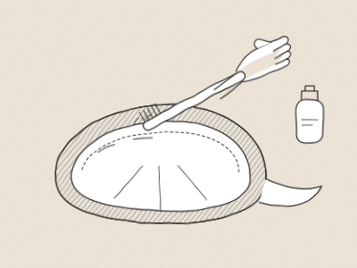
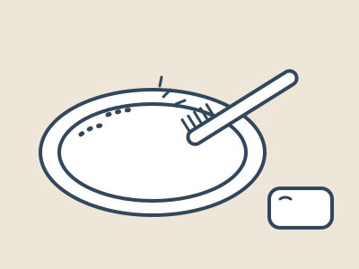
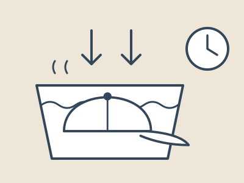
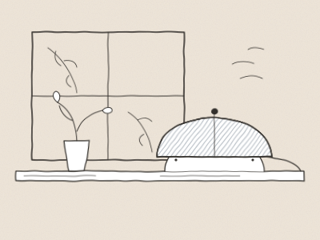
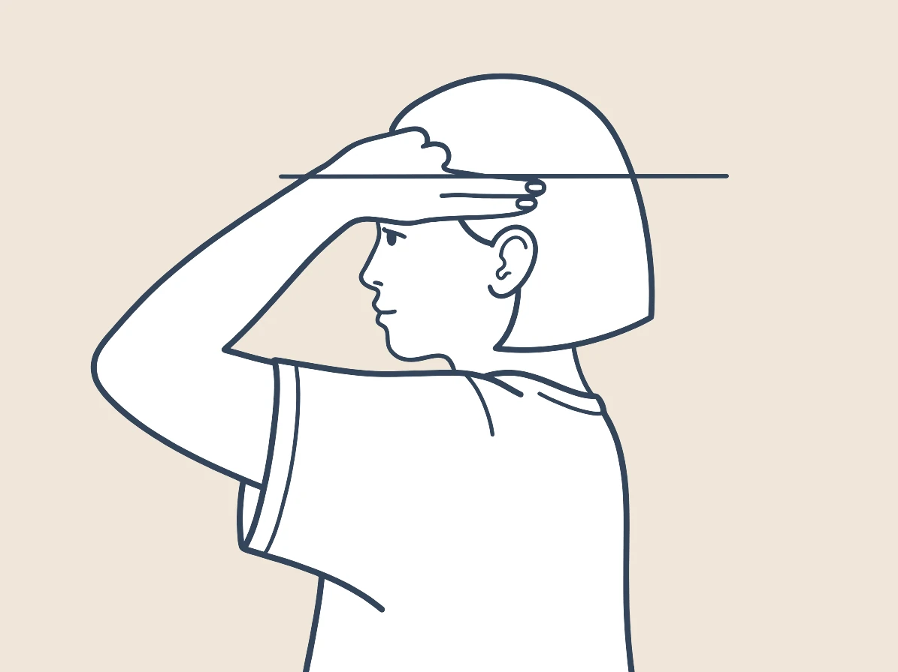
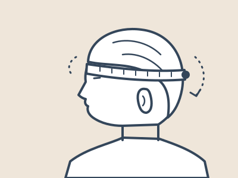
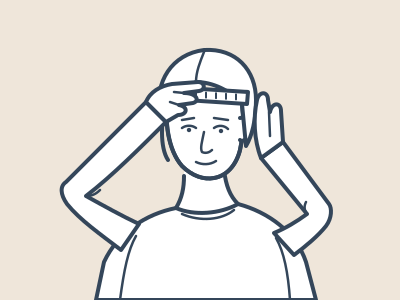

GUIDE
購入前に知りたいこと
お手入れ
基本はご自宅で洗えます。
ウールを使った商品はドライクリーニングをおすすめします。
洗い方
綿やリネン、デニムの帽子は、ご自宅で手洗いできます。
洗うたびに少しずつ色が落ち、やわらかくなっていく。
その変化も、セルフヴィンテージの楽しみのひとつです。
-
STEP 01

汚れの気になるところを、先に
汗じみが出やすい内側の縁（額が当たるところ）に、中性洗剤を少しつけます。
やわらかい歯ブラシで、一方向にやさしくこすってください。 -
STEP 02

押し洗いして、つけ置き
洗面器や桶に、40℃程度のぬるま湯を張ります。
おしゃれ着用の洗剤を、表示どおりの量で溶かします。
形をくずさないよう、手のひらでやさしく押し洗いし、20分ほどつけ置きします。色の濃いデニムは色が出やすいため、ほかのものとは分けて洗ってください。手荒れが気になる方は、ゴム手袋をお使いください。
-
STEP 03

洗濯ネットに入れて、軽く脱水
帽子を洗濯ネットに入れ、洗濯機のいちばん弱い設定で1分ほど脱水します。
-
STEP 04

形を整えて、陰干し
つばやかぶり口の形を、手で整えます。
ザルやボウルなど、帽子の大きさに合うものにかぶせて、風通しのよい日陰で干してください。乾燥機は、縮みや型くずれの原因になるため使わないでください。
保管方法
湿気の少ない、風通しのよい場所にしまってください。
強い光に長く当てると、色があせることがあります。
サイズ
F・M・Lで展開しています（商品により異なります）。
LLはご相談ください。
測り方
メジャーで、頭まわりを測ります。
帽子がちょうど当たる位置を、ぐるりと一周させるのがポイントです。
-
STEP 01

測る位置を確かめる
耳の付け根から、指2本分ほど上の位置を確かめます。
-
STEP 02

頭のまわりを一周させる
おでこの中心から、その位置を通り、後頭部のいちばん出ているところを通って一周させます。
-
STEP 03

鏡で目盛りを読む
メジャーのはじめをおでこの中心に合わせると、鏡で目盛りを読みやすくなります。
目盛りは5mm単位で読み取ってください。
測るときの注意
メジャーがたるまないようにしてください。
強く引っ張りすぎないようにしてください。
頭とメジャーのあいだに、指をはさまないようにしてください。
サイズの選び方
測った頭まわりと、各商品ページの実寸を見比べてお選びください。
頭まわりに1cmほど足したサイズが、ひとつの目安です。
ラッピング
有料で承ります（550円・税込）。
ラッピングを商品と一緒にカートへお入れください。
送料
送料はONLINE STOREの案内をご確認ください。